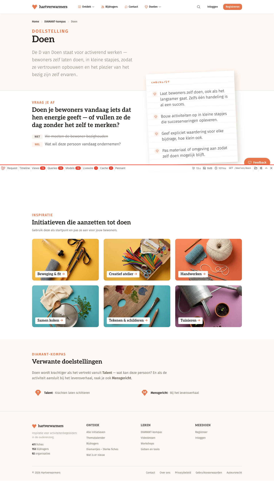

Op de denkdag kwam het gesprek telkens terug bij hetzelfde punt: de pagina per DIAMANT-doel is te mager om te dragen wat we ermee willen. Deze verkenning toont vier bouwstenen die dat oplossen, met /doelen/doen als voorbeeld. Weinig tekst, veel schetsen. Om samen met Maite en Nadine te overlopen.
Wie op een doel klikt, krijgt een sterke kop en een goeie kernvraag. Maar daarna houdt de pagina op.

"Doen je bewoners vandaag iets dat hen energie geeft?" Sterk vertrekpunt, dit blijft.
Vier concrete richtlijnen. Blijft ook.
Zes brede verzamelmappen zoals "Beweging & fit". Geen enkel concreet voorbeeld van hoe doen er in de praktijk uitziet.
Geen schoolvoorbeelden, geen verhaal, geen verdieping. Wie hier landt met goesting om rond doen te werken, valt in het niets.
"Nu is die pagina nog heel summier. Die doelstellingen mogen meer gewicht krijgen, meer invulling."
De site is gebouwd rond de fichebak: kies iets, doe het morgen. In de vormingen leren jullie net het omgekeerde aan. De doelenpagina is de plek waar de site die denkrichting kan overnemen.
"Ik zoek een activiteit."
Bladeren door de bak, iets kiezen dat er tof uitziet, morgen op tafel leggen. Het doel komt achteraf, als het al komt.
"Ik wil meer inzetten op doen."
De doelenpagina toont wat doen betekent, hoe het er in de praktijk uitziet, en welke fiches erbij passen. De keuze wordt gerichter.
Geen ombouw, een aanvulling. De fichebak blijft bestaan voor wie gewoon snel iets zoekt. We maken de doelenroute sterker, we breken de oude route niet af.
Wat er staat blijft staan. Er komen vier blokken bij, elk hieronder uitgewerkt als bouwsteen.
Dezelfde opbouw geldt voor alle zeven doelen. De voorbeelden hieronder gebruiken telkens Doen.
Aanpak: doel per doel. We bouwen eerst de volledige pagina voor de D van Doen uit, leren daarvan, en rollen dan door naar de andere letters.
Drie à vijf fiches waarvan jullie zeggen: zó ziet doen eruit. Met telkens één zin waarom.
Deze fiches zijn schoolvoorbeelden van bewoners die zelf meedoen.
Het team kiest, niet de computer. De AI-score mag kandidaten voorstellen, de keuze en de waarom-zin komen van jullie.
"Het zou nuttig zijn om die voorbeelden goed te cureren. Dat jullie zeggen: kijk, dit zijn nu echt de schone voorbeelden van doen, van activeren."
Geen benodigdheden, geen stappenplan. Gewoon wat er gebeurde en wat het met een bewoner deed.
Eén vraag tijdens een gesprekskaartenmoment, en de tafel stond in vuur en vlam. Zoveel bewoners die tot op late leeftijd zijn blijven zwemmen.
Dus belde het team een revalidatiecentrum met een lift tot in het bad. En gingen ze opnieuw zwemmen.
Begint bij een verhaal, eindigt in doen.
Van verhaal naar activiteit. Het verhaal toont waarom het doel ertoe doet, de fiches eronder tonen hoe je eraan begint.
Beslist: we zetten eerst een paar verhalen handmatig op de pagina en beslissen daarna pas hoe verhalen definitief in de site passen.
Per doel een kort, gekozen lijstje. Geen bibliotheek, wel de vijf beste vertrekpunten.
Elk item heeft een reden. Alles op dit lijstje is door jullie in vormingen gebruikt of aanbevolen.
"Dat je die participatiegids, een podcast of een boek koppelt aan de pagina waar die letter wordt uitgelegd. Dan krijgt dat al wat meer body."
Fiches hangen nu enkel via de verzamelmappen aan een doel. We koppelen ze rechtstreeks.
Fiches uit alle mappen samen, zolang ze bij doen passen.
Kan zonder grote verbouwing. Fiches kunnen technisch al een doel-etiket dragen, we tonen het alleen nog nergens.
De initiatieven verdwijnen niet. Ze zakken op de pagina naar onder, als bundels voor wie liever per thema bladert.
Vier ideeën uit de denkdag die hierbij horen maar een eigen gesprek verdienen.
De startpagina begint nu bij de initiatieven. Ze zou bij de doelen kunnen beginnen, zodat de middel-doel-omslag overal doorwerkt.
Pas zinvol als de doelenpagina's gevuld zijn.
De nieuwsbrief zet een kwartaal lang één doel centraal en roept op tot voorbeelden. In anderhalf jaar is de diamant rond.
Vraagt dat er per doel al iets klaarstaat, anders blijft de oproep leeg.
Op de denkdag klonk twijfel of de I van Inclusief niet beter Inspraak wordt. Dat raakt de teksten van elke doelenpagina.
Beslissing van Maite en Nadine, los van dit ontwerp.
Familie, vrijwilligers, samenwerkingen met scholen en verenigingen: nu zit alles in één ruim doel. Subthema's geven het meer houvast.
Zelfde bouwstenen, gewoon fijner opgedeeld.
Drie knopen zijn al doorgehakt. Eén vraag ligt nog op tafel voor het gesprek met Maite en Nadine.
Voor de tafelronde. Dit blok vat de stand van zaken samen. Opmerkingen bij eender welk blok op deze pagina komen gewoon bij Frederik terecht.